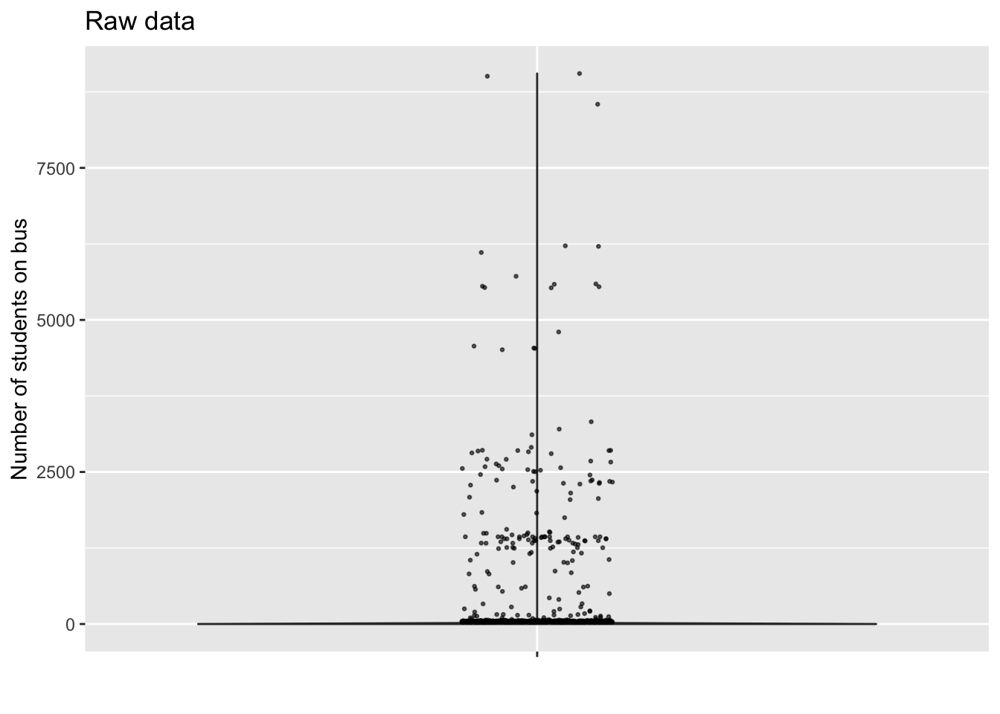
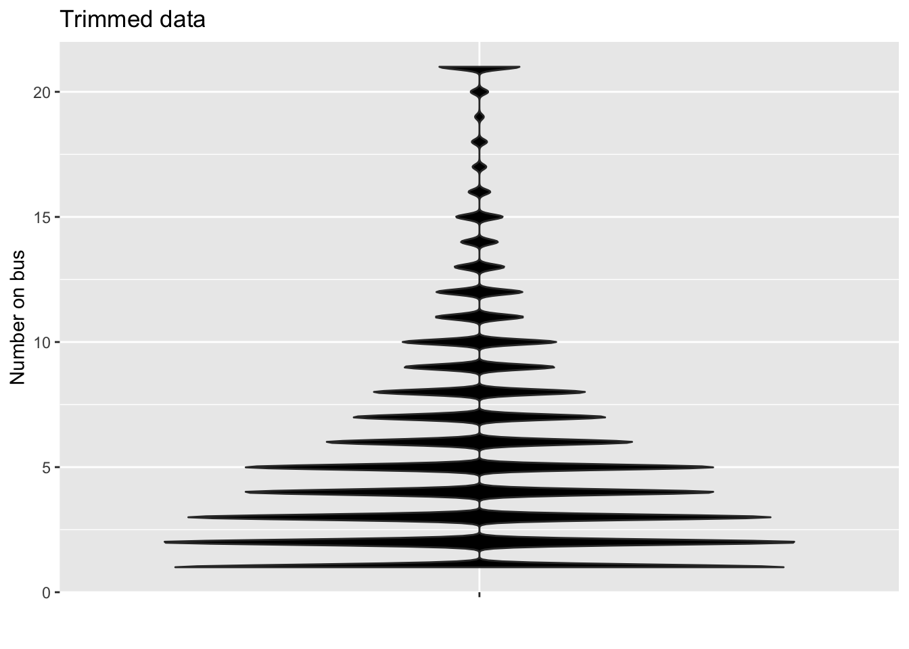
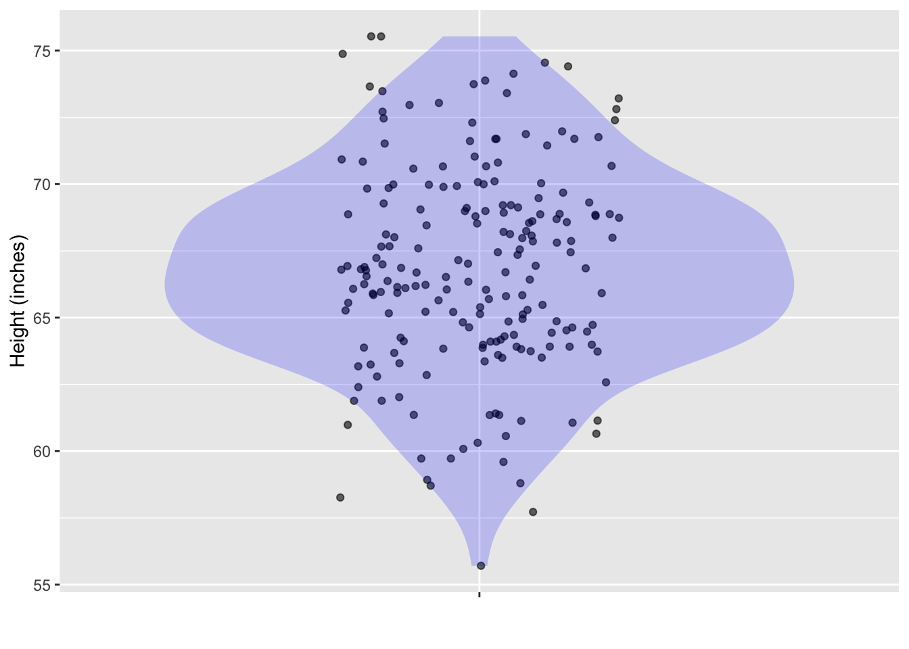
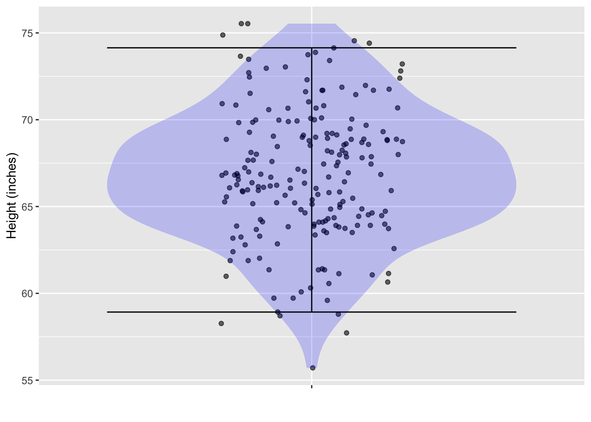

Seattle <- moderndive::house_prices %>%
mutate(log_price = log10(price),
log_area = log10(sqft_living))Learning Checks Lesson 25
Just while in draft
25.1 Given a data frame, construct a predictor function for a specified response variable.
25.2 Use the predictor function to estimate prediction error on a given DAG sample and summarize with root mean square (RMS) error. Relate this to a predition interval.
25.3 Distinguish between in-sample and out-of-sample prediction estimates of prediction error.
25.2
The data frame moderndive::house_prices lists the sales prices of 21,613 houses in King County, Washington (which includes Seattle) sold from May 2014 and May 2015. Often, with price or income data, economists work with the logarithm of the price or income or income-related quantity such as house living area. We are going to do here, but this problem is not about logarithms, so once you create the “logged” data frame, you’ll just be modeling the data using the usual methods.
To create the “logged” data, add these two new variables to the data frame, which we will call Seattle.
- Build a model of
log_price ~ log_areausing theSeattledata. Store the model under the namepmod.
Solution
pmod <- lm(log_price ~ log_area, data = Seattle)- Imagine that you are moving to Seattle in August 2014. Housing is expensive in the Seattle area, so you might decide to live in a small house, say 750 square feet. The
log_areaof such a house is 2.87. Usingmod_eval(), predict thelog_priceof such a house. (Note thatmod_eval()puts the model output in a column namedmodel_output, notlog_price.) In your Rmd file, give the command and show the output. If you’re curious about what the predicted price is in dollars (rather than log-dollars), simply raise 10 to the log-dollar amount. For instance, if themodel_outputwere 5, the dollar amount will be \(10^5 = \$100,000\).
Solution
mod_eval(pmod, log_area = 2.87) log_area model_output
1 2.87 5.324298In dollar terms, the predicted price is 105.324 = 2.1086281^{5}.
Repeat (2), but for a house with lots of space: 1500 square feet. The
log_areaof such a house is 3.18. As in (2), give the command and show the output in your Rmd file.Your budget is $200,000. In log dollars this budget is
log10(200000)= 5.3. The predicted price of a 750 square-foot house is somewhat beyond your budget. But you figure that some 750-square foot house will be within your budget. To see if this is likely, look at the prediction interval of the house price. You can do this by adding theinterval="prediction"to themod_eval()command. Is your budget (5.3 log dollars) within the prediction interval? Show your command and the result in your Rmd file and also give a sentence stating your conclusion.
Solution
mod_eval(pmod, log_area = 2.87, interval="prediction") log_area model_output lower upper
1 2.87 5.324298 4.993416 5.65518Yeah! Your budget of 5.3 log dollars is near the center of the prediction interval.
- On a hunch, you decide to see whether you might find a 1500 square foot (
log_area= 3.18) might also fall within the prediction interval. Will it? Show your command, the result, and a sentence interpreting the result.
Solution
mod_eval(pmod, log_area = 3.18, interval="prediction") log_area model_output lower upper
1 3.18 5.583697 5.252851 5.914543Strictly speaking, your budget (5.3 log dollars) is within the prediction interval. But it is very close to the lower bound of 5.25 log dollars. So there will likely be few houses of 1500 square feet within your budget. So plan that the house you will end up purchasing will be somewhere in the range 750-1500 square feet.
25.XX
You are a bus dispatcher in New York City. The Department of Education bus logistics office has called to say that a school bus has broken down and the students need to be offloaded onto a functioning bus to take them to school. Unfortunately, the DOE officer didn’t tell you how many students are on the bus. You need to make a quick prediction in order to decide what kind and how many busses you will need for the pickup.
You go to the NYC OpenData site bus breakdown page to get the historical data on how many students are on the bus. There are more than 200,000 bus events listed, each one of them including the number of students. You make a jitter/violin plot of the number of students on each of the 200,000 busses.

- The violin plot looks like an upside-down T. Explain what’s going on. (Hint: How many students fit on a school bus?) -A- As very often happens, the data file contains data-entry or other mistakes producing outliers. Almost all of the 200,000 bus incidents fall into the horizontal line near zero. There are only 164 with a number above 100 students. In the US, the legal maximum capacity for a school bus is 72 students.
One of the ways of handling outliers is to delete them from the data. A softer way is to trim the outliers, giving them a value that is distinct but not so far from the mass of values. The figure below shows a violin plot where any record where the number of students is greater than 20 is trimmed to 21.

If you sent a small school bus (capacity 14), what fraction of the time would you be able to handle all the students on the school bus? -A- Only about 5% of the area of the violin plot is above 14.
If you sent one 14-passenger school bus with another on stand-by (just in case the first bus doesn’t have sufficient capacity), what fraction of the time could you handle all the students?
-A- It’s tempting to say that the 2 x 14 = 28 passenger capacity could handle all the cases, but remember, the cases at 21 stand for “21 or more passengers.” We can’t tell from the violin plot how many of those have more than 28 students on board.
- Notice that the violin plot is jagged. Explain why. -A- The number of passengers is an integer, e.g. 1, 2, 3, …. It can’t be a number like 4.5.
25.YYY
At a very large ballroom dance class, you are to be teamed up with a randomly selected partner. There are 200 potential partners. The figure below shows their heights.
From the data plotted, calculate a 95% prediction interval on the height of your eventual partner. (Hint: You can do this by counting.)

Solution
59 to 74 inches.
Since there are 200 points, a 95% interval should exclude the top five cases and the bottom five cases. So draw the bottom boundary of the interval just above the bottom five points, and the top boundary just below the top five points.
